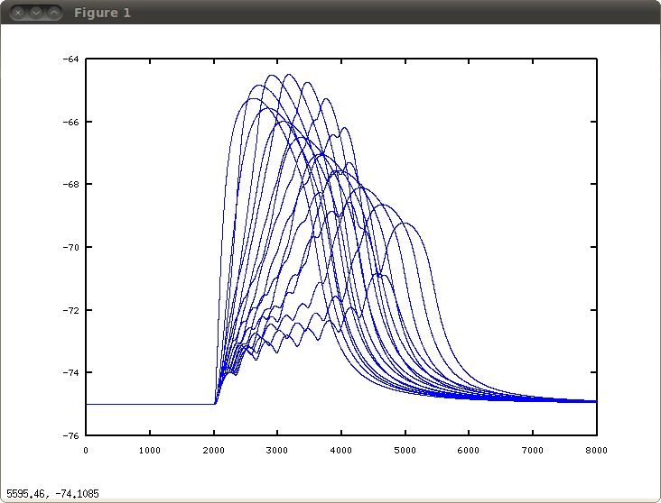

This model was developed for the paper:
Tiago Branco, Beverley Clark and Michael Hausser Dendritic
discrimination of temporal input sequences in cortical neurons.
Science. 2010 Sep 24;329(5999):1671-5. Epub 2010 Aug 12.
It has also been used for all simulations presented in:
Tiago Branco and Michael Hausser
Synaptic integration gradients in single cortical pyramidal cell
dendrites. Neuron. 2011 Mar 10;69(5):885-92.
The directory contains the NEURON mod and hoc files necessary to
reproduce the basic sequence sensitivity result shown in Fig. S5 panel
B in Branco et al. 2010:

The above was generated from octave by plotting the matrix tempV.dat
which is written from the simulation. The traces correspond to the
AMPA+NMDA (there are actually four more traces per sequence in the
simulation; in the paper the time intervals shown are from 0-5 ms).
The code was developed and tested using NEURON 7.1 under Linux. To
run: auto-launch from ModelDB or install by unzipping Branco_2010.zip
into a folder, compile the mod files and start "init_sim.hoc". For
further information please contact Tiago Branco at t.branco@ucl.ac.uk.
Description of files:
./rc19.hoc Cell morphology. Cm has been doubled in apical and basal
dendrites to account for dendritic spines.
./init_biophys.hoc Set biophysical parameters. Includes procedures to
add active conductances to soma, axon and basal dendrites.
./init_synapses.hoc Procedures to add AMPA and NMDA synapses. If using
active dendrites edit NMDAgmax as indicated.
./synapse_loc.dat Location of synapses in the basal dendritic
tree. Left-hand side column is the number of the basal
dendrite and right-hand side the relative position of
the synapse in the dendrite (1 is distal, 0 is
proximal). First line has the number of lines and
number of columns. To add/change the position and
number of synapses edit this file and update the first
line accordingly.
./synapse_order.dat Temporal sequences to be tested. Each number
corresponds to a synapse (in the current format there
are 9 synapses, 0 is the most distal and 8 the most
proximal), and the sequence defines the order of
activation of each synapse. The two sequences in the
file correspond to the IN and OUT sequences
respectively. First line has the number of lines and
number of columns. To test more sequences just add
them to the file and update the first line.
./init_sim Starts the simulation. Currently set to passive mode,
uncomment lines where indicated to switch to active
model. The simulation runs through each of the
sequences defined in synapse_order, and for each
sequence tests different stimulation intervals set by
the variable "nTs". This is currently set to 10, which
results in iterating from 0 (ie: simultaneous
activation) to 9 ms in steps of 1 ms.
20120409 mod.files/cad.mod updated from euler to derivimplicit as per
http://www.neuron.yale.edu/phpBB/viewtopic.php?f=28&t=592